Barracuda PoseNet Tutorial Pt. 1 (Outdated)
Version 2: Part 1
Last Updated: Nov 24, 2020
- Introduction
- Prerequisites
- Create a New Project
- Import Video Files
- Create the Video Player
- Create the Video Screen
- Test the Video Player
- Summary
Introduction
This tutorial series provides step-by-step instructions for how to perform human pose estimation in Unity with the Barracuda inference library. We’ll be using a pretrained PoseNet model to estimate the 2D locations of key points on an individual’s body.
This post demonstrates how to play and view videos inside Unity. We’ll later perform pose estimation on individual frames while the video is playing. We can gauge the model’s accuracy by comparing the estimated key point locations to the source video.
Prerequisites
I recommend checking the following prerequisites if you want to follow along on your own computer.
Unity
This tutorial assumes that you have Unity installed. You can get acquainted with Unity by clicking on one of the tutorials listed below.
How to Make a Game - Unity Beginner Tutorial
Note: You can download the exact version of Unity used for this tutorial by clicking the link below.
Hardware
We’ll be performing inference on the GPU for this series. If possible, use a graphics card from a recent generation.
Create a New Project
First, we need to create a new Unity project. We’ll select the 2D template since the PoseNet model only estimates 2D poses.
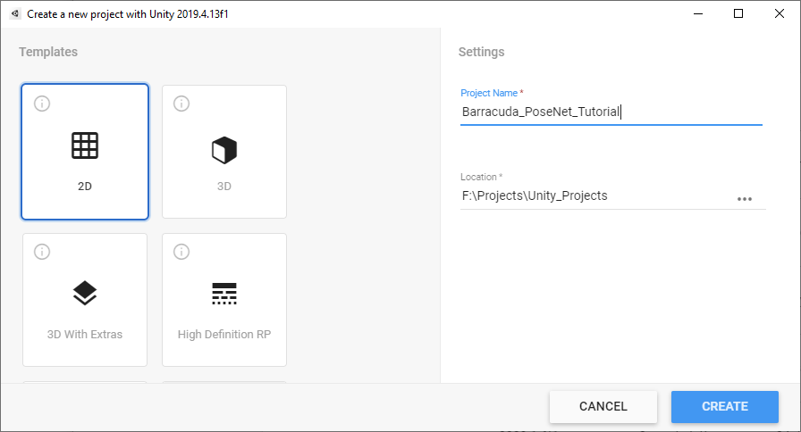
Import Video Files
We’ll be using these two videos available on Pexels, a free stock photos & videos site. The first one is easier for the PoseNet model. The second has some more challenging sections. Download the videos in Full HD resolution.
Two Young Men Doing a Boardslide Over a Railing
Note: Renamed to
pexels_boardslides-
Note: Renamed to
pexels_woman_dancing
Create the Videos Folder
In the Assets window, right-click an empty space, select the Create option, and click Folder. Name the folder Videos.
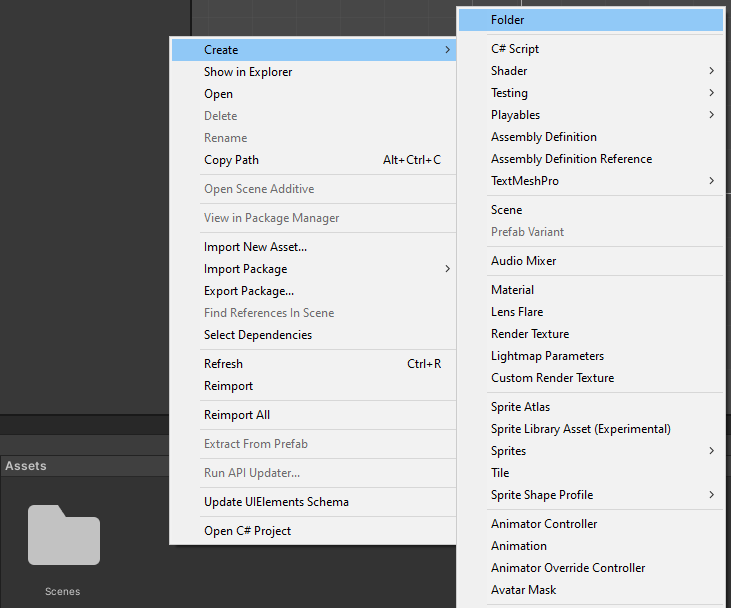
Double-click the Videos folder to open it.
Add Video Files
Drag and drop the two video files from the file explorer into the Videos folder.
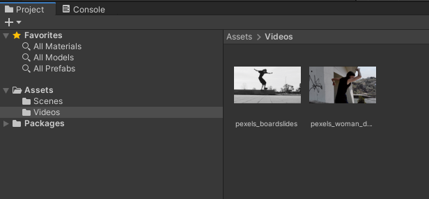
Create the Video Player
In the Hierarchy tab, right-click an empty area, select the Video section, and click Video Player. This will create a new GameObject called Video Player. The default name works well enough so we’ll leave it as is.
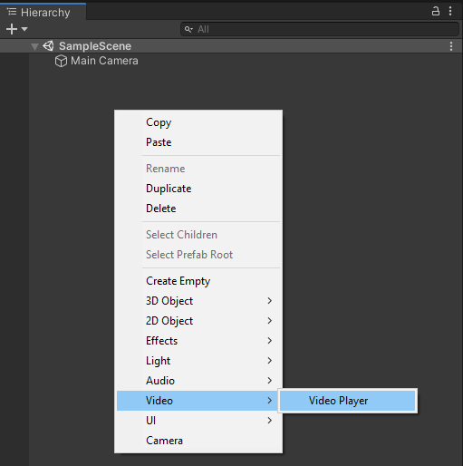
Set Video Clip
Select the Video Player object in the Hierarchy tab. Then, drag and drop the pexels_boardslides file into the Video Clip parameter in the Inspector tab.
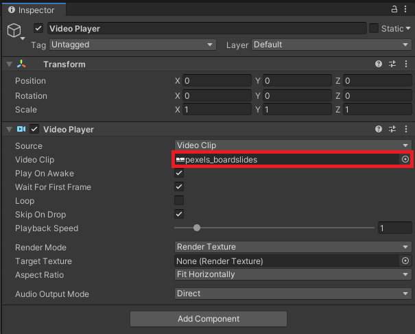
Make the Video Loop
Tick the Loop checkbox in the Inspector tab to make the video repeat when the project is running.
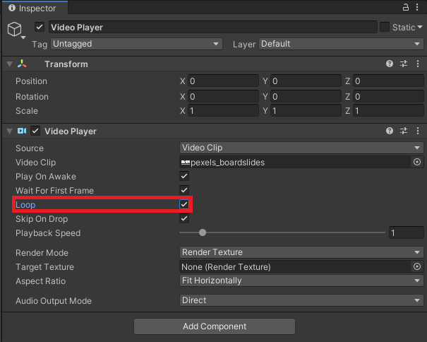
Create the Video Screen
We need to make a “screen” in Unity to watch the video. We’ll use a Render Texture to store the data for the current frame and attach it to the surface of a GameObject.
Create a Render Texture
Create a new folder in the Assets window and name it Textures.
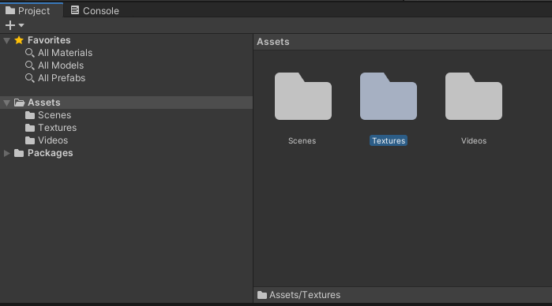
Open the folder and right-click an empty space. Select Render Texture in the Create submenu and name it video_texture.
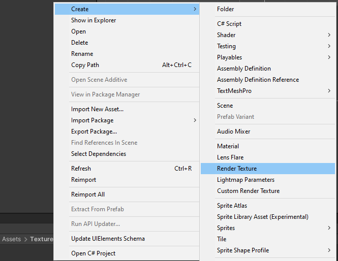
Resize the Render Texture
Select the video_texture asset and set the Size to 1920 x 1080 in the Inspector tab. This will match the video_texture to the resolution of our videos.
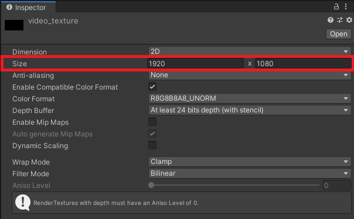
Assign the Render Texture
With the resolution set, select the Video Player object in the Hierarchy tab again. Drag and drop the video_texture object into the Target Texture parameter in the Inspector tab.
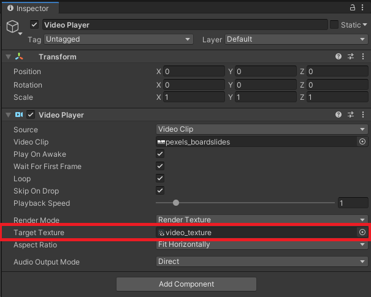
Create the Screen GameObject
Now, we need to create the screen itself. We’ll use a Quad object for the screen. Right click an empty space in the Hierarchy tab, select the 3D Object section and click Quad. We can just name it VideoScreen.
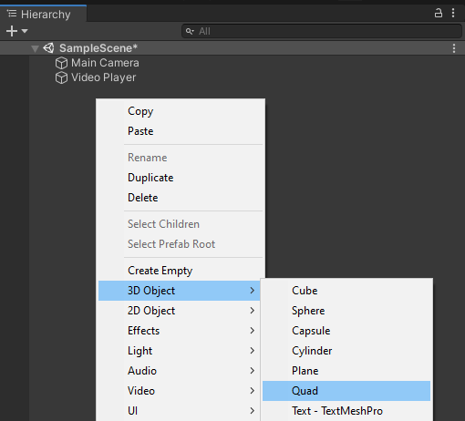
Resize the Screen
With the VideoScreen object selected, we need to adjust the Scale parameter in the Inspector tab. Set the X value to 1920 and the Y value to 1080. Leave the Z value at 1.
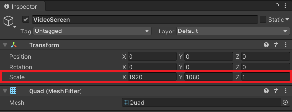
Set the Screen Position
Next, we’ll move VideoScreen to make things easier when processing output from the model. We want the bottom left corner to be at the origin. Set the X value for Position to half the X value for the Scale parameter. Do the same for the Y value. The new Position values should be X: 960 Y: 540 Z: 0.
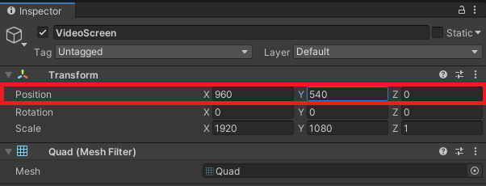
Reset the Scene Perspective
We should center our perspective on the VideoScreen. We can do so by selecting the VideoScreen object and pressing the F key on our keyboard. You can zoom back in by scrolling up with your mouse wheel.
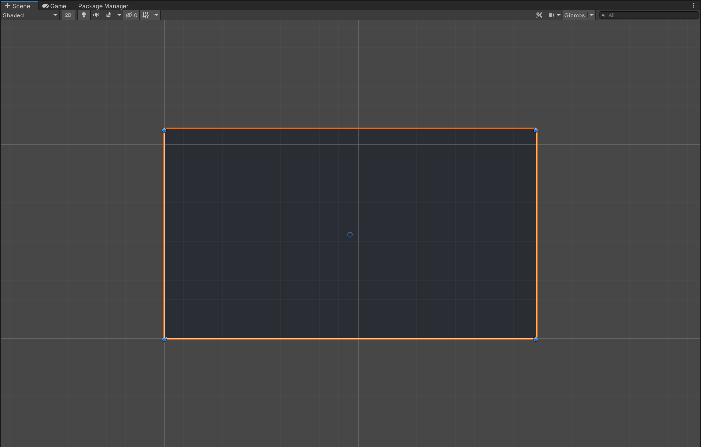
Apply the Render Texture to the Screen
Drag and drop the video_texture asset onto the VideoScreen in the Scene tab. The VideoScreen object should turn completely black.
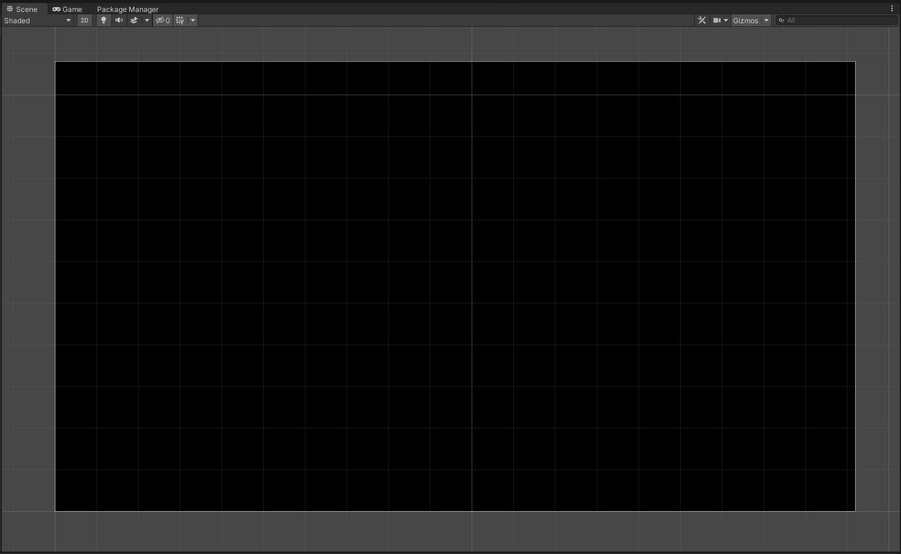
Make Video Screen Unlit
With the VideoScreen object selected, click the Shader dropdown in the Inspector tab. Select the Unlit option and click Texture. This removes the need for a separate light source. The videos would look extremely dim with the Standard shader.
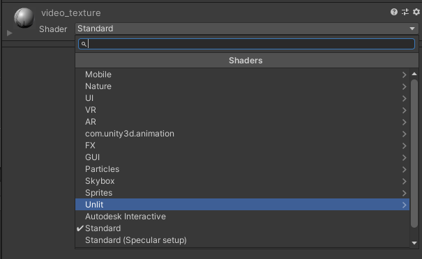
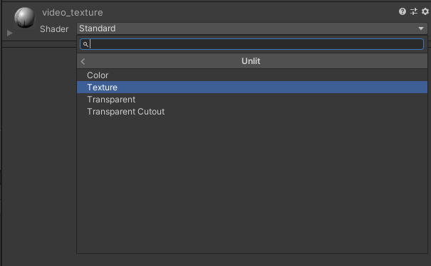
Camera Setup
Before playing the video, we need to reposition and resize the Main Camera object.
Set Camera Position
Select the Main Camera object in the Hierarchy tab and set the Position to same X: 960 Y: 540 as the VideoScreen object. Next, we need to set the Z value for the Position to the opposite of the X value.
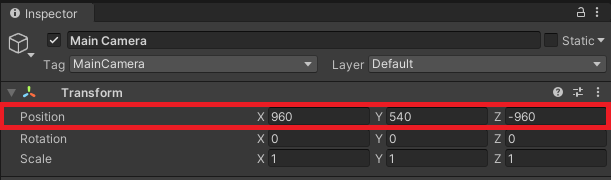
Resize the Camera
Finally, we need to adjust the Size parameter to 540 in the Inspector tab.
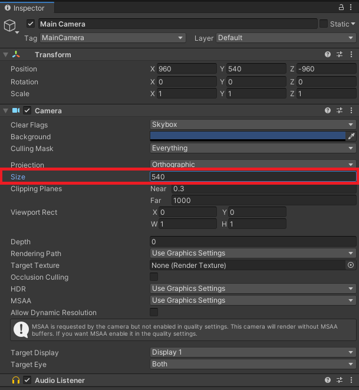
Test the Video Player
Now we can finally click the play button and watch the video.
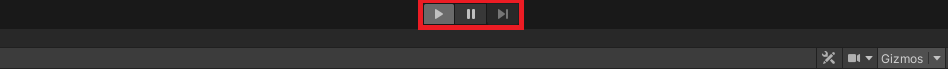
Result

Summary
We now have a video player that we can use to feed input to the PoseNet model. The next post covers how to prepare input for the model on the GPU.